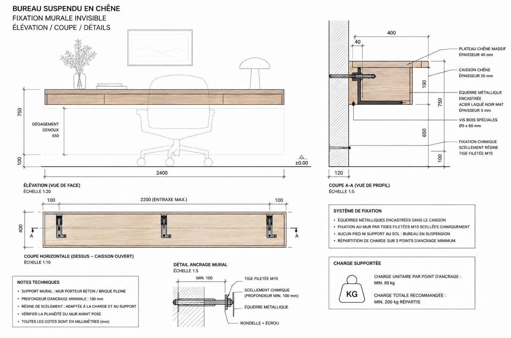

Appartement Mitte · Intérieur, rénovation, novembre 2025
Altbau apartment renovation

Le contexte. Un appartement de 69,9 m² au 2ᵉ étage d'un immeuble Altbau des années 1920, à Berlin-Mitte. De vrais atouts : plafonds à 3,20 m, une exposition ouest offrant une belle lumière de fin de journée, un balcon avec vue dégagée. Mais une distribution en « peigne » qui dessert mal l'appartement : un long couloir aveugle en tunnel, des circulations mal reliées entre les pièces de vie, et des sols fragmentés par une succession de matériaux différents d'une pièce à l'autre. Le projet s'adresse à un couple de trentenaires en télétravail partiel, pour qui l'appartement doit conjuguer vie quotidienne et espace de travail sans sacrifier le calme du soir.
L'intention. Le parti pris repose sur la continuité des matières plutôt que sur leur accumulation : laine bouclée et bois en surfaces dominantes, contre lesquelles se détachent quelques pièces rapportées. La verrière en verre strié fonctionne comme un filtre, séparant les espaces sans les cloisonner. La chaise Wassily, choisie pour sa structure métallique tubulaire, introduit une référence au vocabulaire du Bauhaus, contemporain de la construction de l'immeuble en 1920. L'éclairage, indirect et à température chaude (2700K), accompagne cette matérialité sans chercher à la surenchérir.
La stratégie. Un sol unique et continu déployé sur les 70 m², qui met fin au mélange carrelage / moquette / stratifié. Des ouvertures vitrées percées dans le couloir pour casser l'effet tunnel et faire entrer la lumière ouest jusqu'au cœur du plan : leur tracé a été calé sur les cloisons de distribution non porteuses, en laissant intacts les murs de refend structurels typiques de l'Altbau, pour une intervention légère plutôt qu'une reprise de structure lourde. Des rangements sur-mesure intégrés au couloir pour récupérer les mètres carrés jusque-là perdus.
Le résultat. Le couloir aveugle, autrefois fermé par une porte vers le salon, s'ouvre désormais sans seuil sur les pièces de vie grâce aux ouvertures vitrées et au claustra strié qui laissent filer la lumière ouest jusqu'au fond du plan. Seul le bureau garde sa porte, en retrait, pour préserver un espace de concentration. Le sol unique supprime les ruptures visuelles entre les pièces, et les rangements sur-mesure absorbent ce que l'ancienne distribution laissait à l'abandon.
Matériaux & durabilité. La rénovation privilégie la restauration du bâti Altbau existant (plafonds à 3,20 m, huisseries d'origine) plutôt que sa transformation lourde : les ouvertures vitrées et le claustra en verre strié résolvent la question de la lumière et de la circulation sans toucher aux murs porteurs. Le chêne huilé du bureau suspendu et des rangements, comme le sol continu en parquet chevron, sont choisis pour vieillir et se réparer localement plutôt que se remplacer ; la laine bouclée et le lin lavé complètent cette palette de matières durables, pensée pour durer plutôt que pour un effet neuf figé.
Avant / après le plan

- Zones de nuit, sans lumière naturelle
- Zones de jour à éclairer (salon, bureau)
- Zones sans aucune lumière naturelle
- Points oranges : surfaces perdues, à exploiter

- ///Murs à casser / portes à retirer
- Salle de bain
Pièce par pièce
Salon
La verrière en verre strié délimite le salon sans le cloisonner, filtrant la lumière tout en conservant la continuité visuelle avec le reste du plan. La chaise Wassily introduit une rupture métallique dans une pièce autrement dominée par le bois et la laine bouclée ; l'éclairage indirect, à 2700K, accompagne cette matérialité sans la concurrencer.


Bureau
Bureau suspendu en chêne, claustra en verre strié à cadre noir, laine bouclée et tapis tufté, végétation sculpturale. L'ancien couloir tunnel s'ouvre désormais sans porte sur le salon ; seul le bureau, en retrait, garde la sienne pour rester un espace de concentration à part.



Chambre
Palette monochrome : laine bouclée, lin lavé, parquet chevron. Rangements en chêne et verre strié exploitant les 3,20 m sous plafond, appliques murales à 2700K, ficus et toile abstraite.


Évolution de la lumière
Le salon a été pensé pour épouser la course du soleil, exposition ouest : lumière froide et posée le matin, clarté douce en journée, embrasement chaleureux au coucher du soleil. Une même pièce, trois ambiances, la même attention aux matières et à la profondeur visuelle.